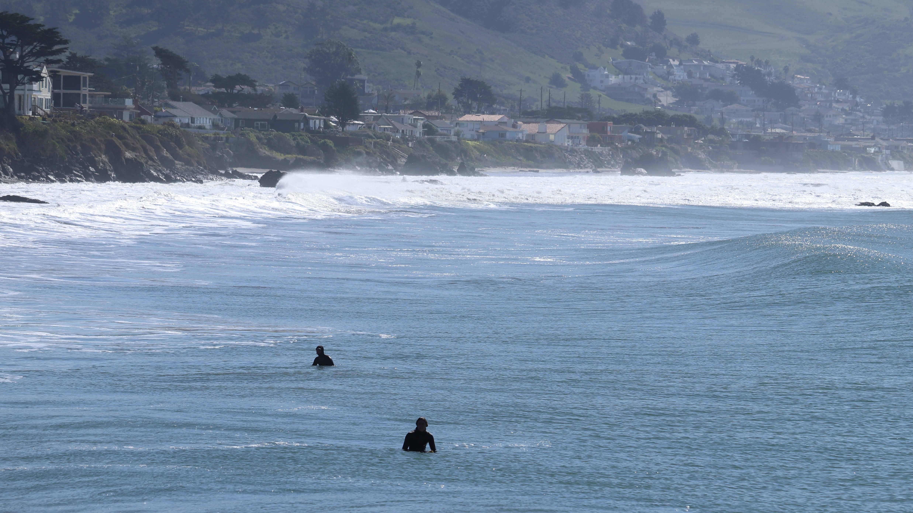
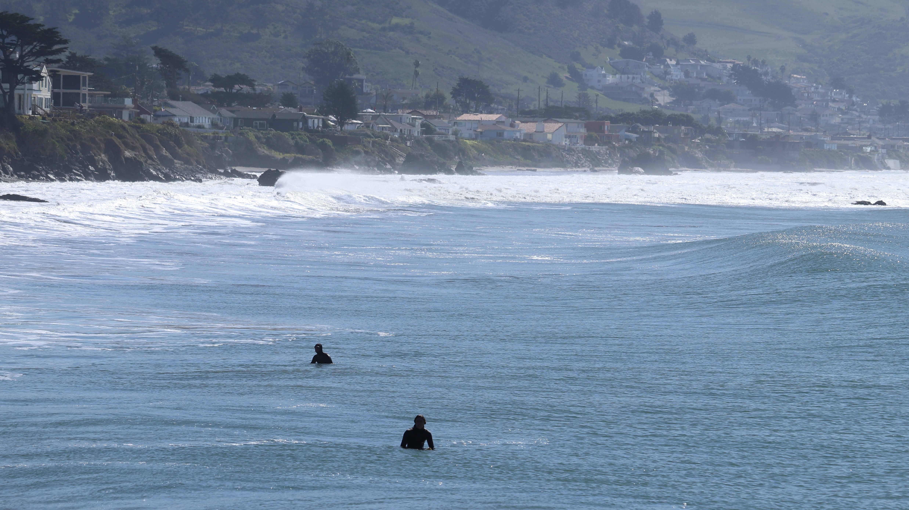

Haoting Gao's travel album
I like taking pictures and taking pictures very much, so I decided to record my trip. Traveling makes me very happy, especially with my friends. I think travel records are a very important thing. People's memories are always limited, there is no way to remember all the good things in life, but photos can help us record what we have experienced. I have a lot of travel plans and many places I want to go. I often use my mobile phone to take pictures and use drones to take pictures. This page will be a presentation of the results of my trip.
In the spring break of 2022, I took a self-driving trip to California Highway one. These photos are my fond memories, including boaters, people waiting for surfing, seals lying on the beach basking in the sun, and trams in San Francisco. I will update my travel records on this page in the future. The trip to California Ring 1 was very fulfilling. We had a total of 1600mile, climbed the Yosemite Canyon late at night, had a barbecue in the forest cabin, and traced the Big Dipper on the dark road. But there are also some regrets about this trip. Due to the weather, the road to Sequoia National Park has been closed. So we failed to get a picture of the huge cedar tree. I hope we can make up for this regret next time.
 
